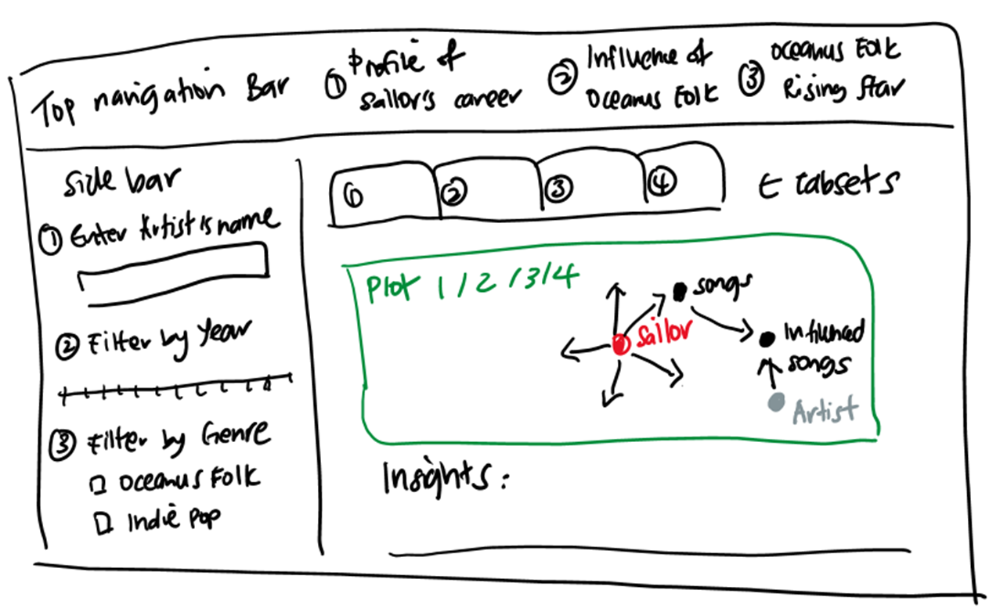
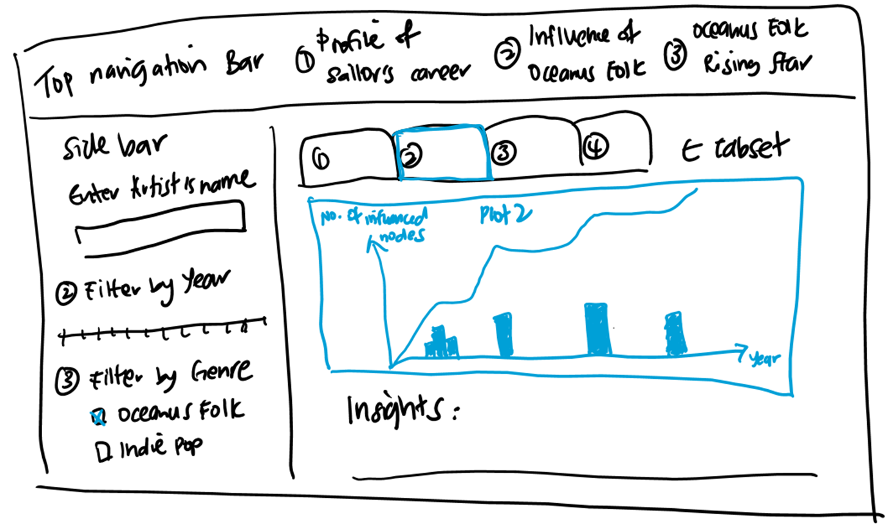

The story of Sailor Shift is more than a tale of individual stardom — it is a reflection of how local culture, through music, can resonate on a global scale. Her rise from a small island nation to the forefront of the international music scene not only brought worldwide recognition to Oceanus Folk but also reshaped the genre itself. Sailor’s rising popularity led to greater interest in the genre’s roots, its collaborators, and its influence across musical styles.
This project is motivated by the opportunity to explore that transformation through data. By visualising the rich network of artistic relationships, genre influences, and temporal trends captured in a comprehensive knowledge graph, we aim to illustrate the pivotal role Sailor Shift has played as a prominent ambassador of Oceanus Folk. In collaboration with journalist Silas Reed, we seek to create meaningful visualisations that reveal the deeper story behind Sailor’s success, trace the evolution of Oceanus Folk, and uncover new and compelling insights along the way.
Objectives
This project aims to build interactive visualisation tools that allow journalist Silas Reed and his readers to explore and uncover meaningful insights into Sailor Shift’s career and the influence of Oceanus Folk on the global music scene. The key objectives are as follows.
Understand the Profile of Sailor Shift’s Career
Visualisations will trace Sailor’s artistic journey, highlighting who has influenced her over time, her key collaborators, and the individuals she has directly or indirectly influenced. It will also explore how she has impacted members of the broader Oceanus Folk community.
Examine the Spread and Evolution of Oceanus Folk
The tools will map how Oceanus Folk has spread through the musical world by identifying whether its influence has been intermittent or gradual, pinpointing the most influenced genres and artists, and showing how the genre itself has evolved, especially through Sailor’s influence and cross-genre inspiration.
Develop a Profile of a Rising Star in the Music Industry
By visualising and comparing the career trajectories of three artists, the project will uncover key patterns in how an artist’s influence evolve as he/she gains popularity. These patterns will then guide data-driven predictions about the next generation of Oceanus Folk artists expected to rise in the coming five years.
Data
This project explores the dataset provided by VAST Challenge 2025 Mini-Challenge 1. It is a comprehensive knowledge graph capturing the landscape of the the music industry. The graph consist of 17,412 nodes and 37,857 edges, organised into 17 connected components.
Each node represents a person, song, record label, album, or musical group. The edges represent the relationships between connected nodes, as defined below.
Edge Type
Source Node(s)
Destination Node(s)
Description
PerformerOf
Person, MusicalGroup
Song, Album
Source performed the destination.
ComposerOf
Person
Song, Album
Source composed the destination.
ProducerOf
Person, RecordLabel
Song, Album, Person, MusicalGroup
Source participated in the production of the destination’s work.
LyricistOf
Person
Song, Album
Source wrote lyrics for the destination.
RecordedBy
Song, Album
RecordLabel
Destination aided in the recording process for the source.
DistributedBy
Song, Album
RecordLabel
Destination aided in the distribution process for the source.
InStyleOf
Song, Album
Song, Album, Person, MusicalGroup
Source was performed at least partly in the style of the destination.
InterpolatesFrom
Song, Album
Song, Album
Source interpolated a melody from the destination.
CoverOf
Song, Album
Song, Album
Source is a cover of the destination.
LyricalReferenceTo
Song, Album
Song, Album
Source makes a lyrical reference to the destination.
DirectlySamples
Song, Album
Song, Album
Source directly reuses a portion of the destination’s audio via sampling.
MemberOf
Person
MusicalGroup
Source is (or was) a member of the destination.
Methodology
Download the libraries (if required) before loading the packages:
Data Pre-processing: Ensure data integrity prior to analysis.
Validation of Node and Edge integrity: Check and remove any missing or duplicate nodes and edges to ensure a consistent and accurate representation of the network.
Schema compliance: Verify all edges against the predefined schema to confirm that source and destination node types were correctly aligned with their corresponding edge types. Any incorrect edge and nodes identified will be removed.
Data Enhancement: Creation of additional columns to facilitate analysis.
Column Standardisation: Column names will be renamed and formatted to support the creation of network graph.
Data Exploration and Visualisation
With reference to relevant literature in musicology, network science and cultural analysis, the following statistical measures will be applied.
Bayesian Surprise: To quantify whether influence had occurred gradually over time or emerged in bursts.
Genre Entropy: To measure diversity of genres associated with each artist or production, providing insights into stylistic concentration or crossover influence.
Visualisations will play a central role in pattern recognition and deriving insights.
Interactive Network Graphs will be used to explore artistic relationships, genre influences, and collaboration patterns, helping to identify key players across the musical landscape.
Bar and Line Charts will illustrate influence and releases over time, highlighting pivotal moments in Sailor Shift’s career and the broader evolution of Oceanus Folk.
User-Driven Exploration will be enabled through a Shiny app, allowing Silas Reed and readers to interact with the network, adjust filters, and uncover insights based on their interests.
Shiny Prototype Sketches
This is what we would envisage for our Shiny App.


Input
Input variables such as Artist Name, Year and Genre will be included in the sidebar. This allows selection of different artists for analysis and filtering by Year and Genre to understand the evolution over time and influence impact on different Genre. It will be set to default variables based on the scope of the Mini Case 1, but will allow users to customise their selections where required for further analysis.
Output
The output will include the plots and insights which we have obtained based on the guiding questions given in Mini Case 1.
We have also started on the prototyping using Shiny as follows:
Show plot code
library(shinydashboard)library(collapsibleTree)library(visNetwork)library(shinycssloaders)library(bslib)website_theme <-bs_theme(bootswatch ="minty",primary ="#2C3E50",secondary ="#E67E22",success ="#1ABC9C",base_font =font_google("Quicksand"),navbar_dark =TRUE)ui <-navbarPage(title =div(HTML(" <div style='display: flex; flex-direction: column; justify-content: flex-end; margin-top: 8px; line-height: 1.2; color: #0077B6; font-weight: bold; font-size: 16px;'> <span>Oceanus Folk:</span> <span>Then-and-Now</span> </div> ")),theme = website_theme,id ="main_tabs", tags$head( tags$style(HTML(" .navbar-nav > .active > a, .navbar-nav > .active > a:hover, .navbar-nav > .active > a:focus { color: #2C3E50 !important; background-color: transparent !important; border-bottom: 2px solid #2C3E50 !important; font-weight: 600; } .navbar-nav > li > a:hover { background-color: transparent !important; border-bottom: 2px solid #aaa !important; color: #2C3E50 !important; } .navbar-nav > li > a { padding-top: 15px !important; padding-bottom: 10px !important; } ")) ),tabPanel("Profile of Sailor's Career",sidebarLayout(sidebarPanel(textInput("artist", "Enter Artist", value =""),sliderInput("year_range", "Filter by Year:", min =1980, max =2040,value =c(1980, 2040), step =1, sep ="", animate =TRUE),checkboxGroupInput("filter_genres", "Filter by Genre:", choices =c("Oceanus Folk", "Indie Pop", "Indie Folk")) ),mainPanel(tabsetPanel(tabPanel("Overview", withSpinner(collapsibleTreeOutput("influenceTree", width ="100%", height ="400px")), tags$hr(),htmlOutput("sailorBio") ),tabPanel("1a: Influenced By Sailor",plotOutput("influencedByPlot", height ="400px"),htmlOutput("insight_1a") ),tabPanel("1b: Collaborations",visNetworkOutput("collabInfluenceNetwork", height ="500px"),htmlOutput("insight_1b") ),tabPanel("1c: Impact on Oceanus Folk",plotOutput("broadInfluencePlot", height ="400px"),htmlOutput("insight_1c") ) ) ) )),tabPanel("Influence of Oceanus Folk",sidebarLayout(sidebarPanel(textInput("artist", "Enter Artist", value =""),sliderInput("year_range", "Filter by Year:", min =1980, max =2040,value =c(1980, 2040), step =1, sep ="", animate =TRUE),checkboxGroupInput("filter_genres", "Filter by Genre:", choices =c("Oceanus Folk", "Indie Pop", "Indie Folk")) ),mainPanel(tabsetPanel(tabPanel("2a: Rise of Oceanus Folk's Influence", plotOutput("genreTrendPlot", height ="400px"),htmlOutput("insight_2a") ),tabPanel("2b: Influenced Genres & Top Artists", plotOutput("influencedGenresPlot", height ="400px"),tableOutput("topInfluencedArtists"),htmlOutput("insight_2b") ),tabPanel("2c: Evolution of Oceanus Folk", plotOutput("evolvingOceanusPlot", height ="400px"),htmlOutput("insight_2c") ) ) ) )),tabPanel("Oceanus Folk Rising Star",sidebarLayout(sidebarPanel(selectInput("selected_artists", "Select Artists to Compare:",choices =c("Sailor Shift", "Maya Blue", "Juno Rivers"),selected =c("Sailor Shift", "Maya Blue", "Juno Rivers"),multiple =TRUE),sliderInput("year_range", "Filter by Year:", min =2000, max =2040,value =c(2020, 2040), step =1, sep ="", animate =TRUE),checkboxGroupInput("filter_genres", "Filter by Genre:", choices =c("Oceanus Folk", "Indie Pop", "Indie Folk")) ),mainPanel(tabsetPanel(tabPanel("3a: Career Trajectories of 3 Artists", plotOutput("careerComparePlot", height ="400px"),htmlOutput("insight_3a") ),tabPanel("3b: Prediction of Future Rising Stars", tableOutput("predictedStars"),htmlOutput("insight_3b"), ) ) ) ) ))server <-function(input, output, session) { output$influenceTree <-renderCollapsibleTree({collapsibleTree(df =data.frame(Genre ="Oceanus Folk", Mentor ="Ivy Echoes", Artist ="Sailor Shift" ),hierarchy =c("Genre", "Mentor", "Artist"),root ="Oceanus Folk" ) })output$collabInfluenceNetwork <-renderVisNetwork({ nodes <-data.frame(id =1:4, label =c("Sailor", "Ivy Echos", "Node1", "Node2")) edges <-data.frame(from =c(1, 1, 2), to =c(2, 3, 4))visNetwork(nodes, edges)})output$yourPlotName <-renderPlot({plot(1, 1, type ="n", xlab ="", ylab ="", axes =FALSE)text(1, 1, "To be added", cex =1.5, col ="gray50")})output$insight_1a <-renderUI({HTML("<p><strong>Insight:</strong> <To be Added>.</p>")})output$insight_1b <-renderUI({HTML("<p><strong>Insight:</strong> <To be Added>. </p>")})output$insight_1c <-renderUI({HTML("<p><strong>Insight:</strong> <To be Added>.</p>")})# 2a: Rise of Oceanus Folk Influenceoutput$insight_2a <-renderUI({HTML("<p><strong>Insight:</strong> < To be added>.</p>")})# 2b: Genres & Artists Influencedoutput$insight_2b <-renderUI({HTML("<p><strong>Insight:</strong> <To be Added>.</p>")})# 2c: Evolution of Oceanus Folkoutput$insight_2c <-renderUI({HTML("<p><strong>Insight:</strong> <To be Added>.</p>")})# 3a: Career trajectories of selected artistsoutput$careerComparePlot <-renderPlot({ years <-2020:2030plot(years, c(5, 10, 20, 30, 45, 60, 70, 80, 85, 90, 92), type ="l", col ="#0073B7",ylim =c(0, 100), xlab ="Year", ylab ="No. of Notable Songs", lwd =2,main ="No. of Notable Songs Over Time")lines(years, c(2, 4, 10, 18, 25, 30, 40, 55, 60, 70, 75), col ="#E67E22", lwd =2)lines(years, c(1, 2, 4, 8, 12, 20, 28, 35, 45, 55, 60), col ="#1ABC9C", lwd =2)legend("bottomright", legend =c("Sailor Shift", "Maya Blue", "Juno Rivers"),col =c("#0073B7", "#E67E22", "#1ABC9C"), lty =1, lwd =2)})output$insight_3a <-renderUI({HTML("<p><strong>Insight:</strong> <To be Added>.</p>")})# 3b: Predicted rising starsoutput$insight_3b <-renderUI({HTML("<p><strong>Prediction:</strong> <To be Added>.</p>")})}options(shiny.launch.browser =TRUE)shinyApp(ui, server)